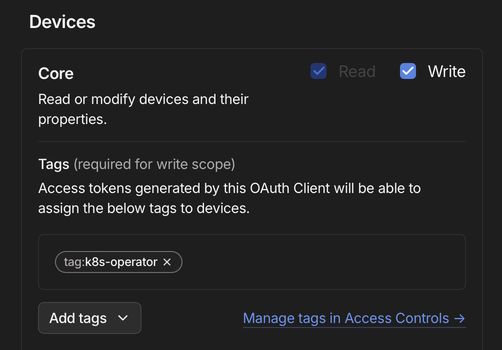
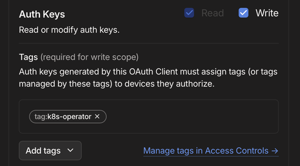

Expose Services with Tailscale
This guide is a recommendation on how to access services from anywhere if you are evaluating the metalstack on-prem starter without a public IP-address.
These steps will guide you through the process quickly. For a deeper dive, or if you want to use alternative setups, the Tailscale articles are also linked.
What are Tailscale and Tailnets?
Tailscale is a Canadian company that offers a virtual private network solution based on WireGuard.
Instead of relying on centralised VPN servers to route all traffic, Tailscale creates a mesh VPN called Tailnet. It creates encrypted peer-to-peer connections between network subscribers. This approach is claimed to improve throughput and stability while reducing latency.
Tailscale's solution is composed of components that are mostly open source. Find more information on their open source sstatement and their GitHub repository.
Setup an Account and Clients
Please begin by following these steps to use an authentication provider to create the first user account for your network.
The first step is to install Tailscale clients on the devices from which you wish to access the Kubernetes services.
Should you require to extend an invitation to additional users, this can be facilitated by navigating to the "Users" tab on the Admin Console.
Setup the Operator
Labels
First, we will establish tags to categorise our services. Please open the 'Access controls' tab, where you will find a text editor containing all the Access Control settings in JSON format.
Uncomment the tagOwners section and add the following tags:
"tagOwners": {
"tag:k8s-operator": [],
"tag:k8s": ["tag:k8s-operator"],
}The operator will use the k8s-operator-tag. Devices with this tag are now configured as owner for devices with the k8s-tag, which will be used for our services.
Create OAuth-Client Credentials
In the "Settings" tab at "OAuth clients", generate a new OAuth client. Set write permissions for "Devices - Core" and "Keys - Auth Keys". Select the k8s-operator tag for both.
 
Therefore, a device that has been assigned the label k8s-operator will have the capability to register additional devices with the k8s tag.
When you click "create", you get a client-id and client-secret, that you will need to setup the operator.
Setup Operator with helm
The most common and practical way is to use a Helm chart to setup the operator. Therefore, we first have to add and update the helm-repository of tailscale:
helm repo add tailscale https://pkgs.tailscale.com/helmcharts
helm repo updateNow, we can install the helm-chart in a dedicated namespace using the credentials of the OAuth client
helm upgrade \
--install \
tailscale-operator \
tailscale/tailscale-operator \
--namespace=tailscale \
--create-namespace \
--set-string oauth.clientId="<OAauth client ID>" \
--set-string oauth.clientSecret="<OAuth client secret>" \
--waitCheck on the administration console, if your operator appears on the Machines list.
Alternative ways & troubleshooting:
- Take the operator.yaml manifest from the GitHub repository and make your adjustments to use Static manifests with kubectl
- If the operator does not show op in the Machines list, use the guide for Troubleshooting the Kubernetes operator
Expose Services on the Tailnet
There are three ways to allow traffic to your pods from the tailnet. We can setup a dedicated Service or annotate an existing one. For more routing options, use an Ingress object. For detailed configuration options, review the article about Expose a Kubernetes cluster workload to your tailnet (cluster ingress)
Add a Load Balancer Service
The installed operator is looking for Service objects with the spec.typeof LoadBalancerand the spec.loadBalancerClass of tailscale.
---
apiVersion: v1
kind: Service
metadata:
name: nginx
spec:
ports:
- name: https
port: 443
targetPort: 443
type: LoadBalancer
loadBalancerClass: tailscaleAnnotate an existing Service
Edit the Service and add the annotation tailscale.com/expose with the value "true":
---
apiVersion: v1
kind: Service
metadata:
annotations:
tailscale.com/expose: "true"
name: nginx
spec:
...Note that "true" is quoted because annotation values are strings, and an unquoted true will be incorrectly interpreted as a boolean.
Use an Ingress
To enable path-based routing, use an Ingress resource. Ingress routes only use TLS over HTTPS. To make this work, you have to enable the MagicDNS and HTTPS options in the DNS-Tab on your Administration Console. This enables helpful features:
- Magic DNS automatically register your services with subdomains in your tailnet
- HTTPS enables the provisioning of certificates for devices
To set the Ingress up, just refer to tailscale as the ingressClassName:
---
apiVersion: networking.k8s.io/v1
kind: Ingress
metadata:
name: nginx
spec:
ingressClassName: tailscale
rules:
- http:
paths:
- path: /
pathType: Prefix
backend:
...Please consider, that currently only paths with pathType: prefix are supported currently